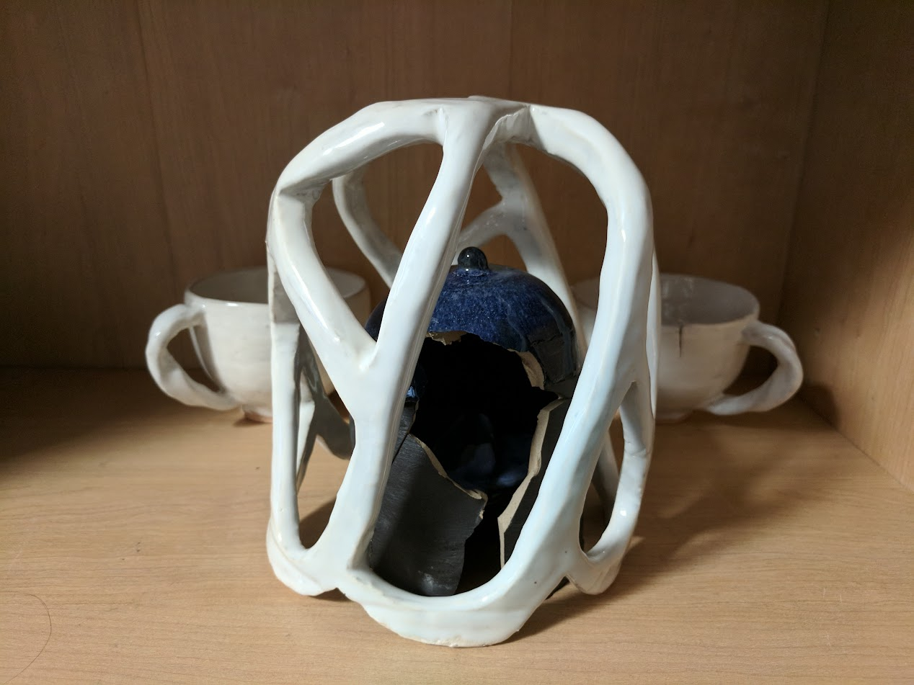
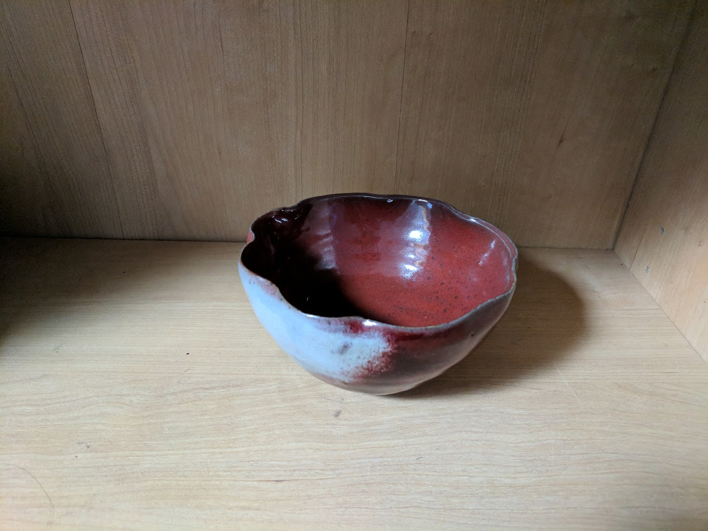
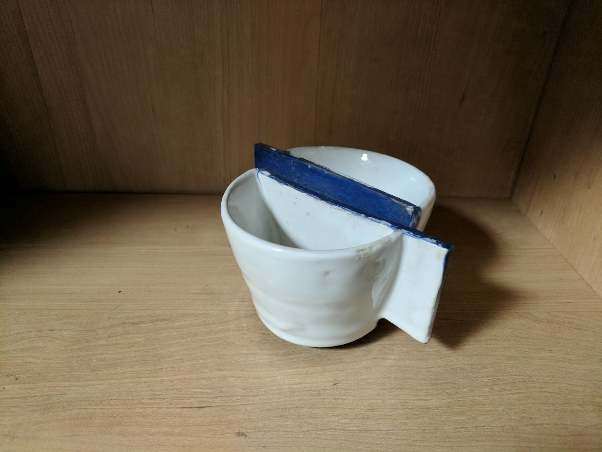
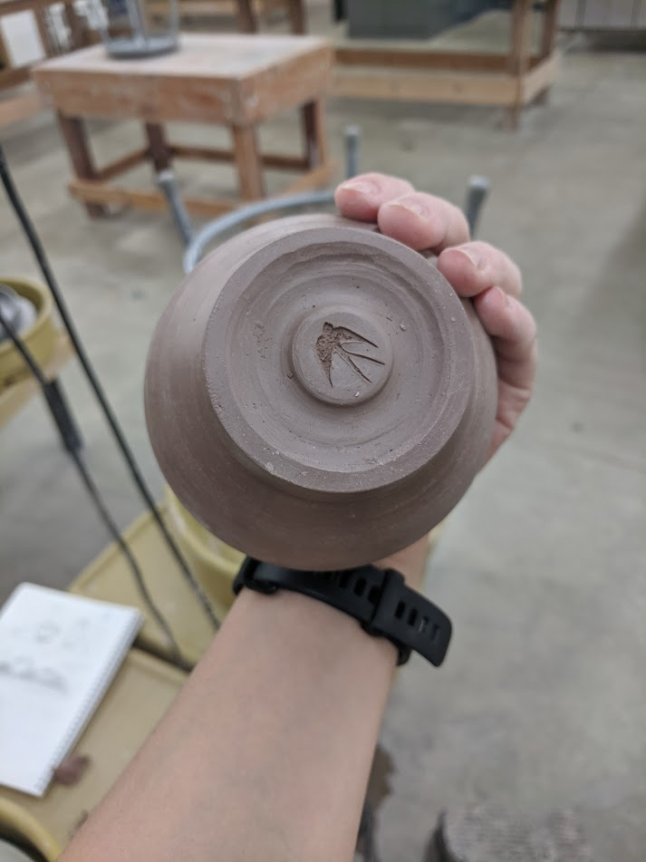
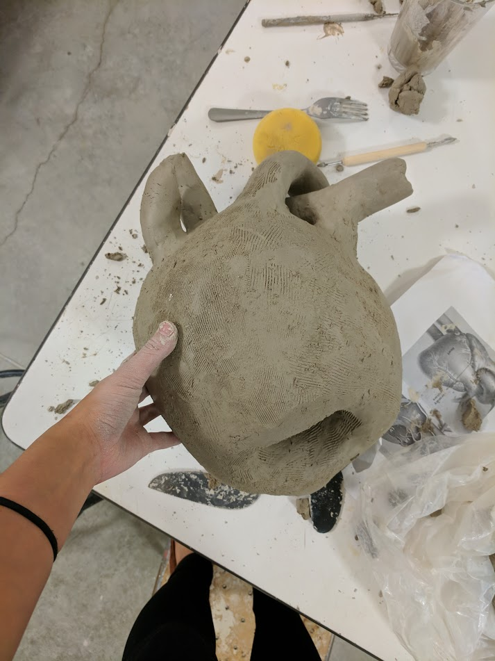
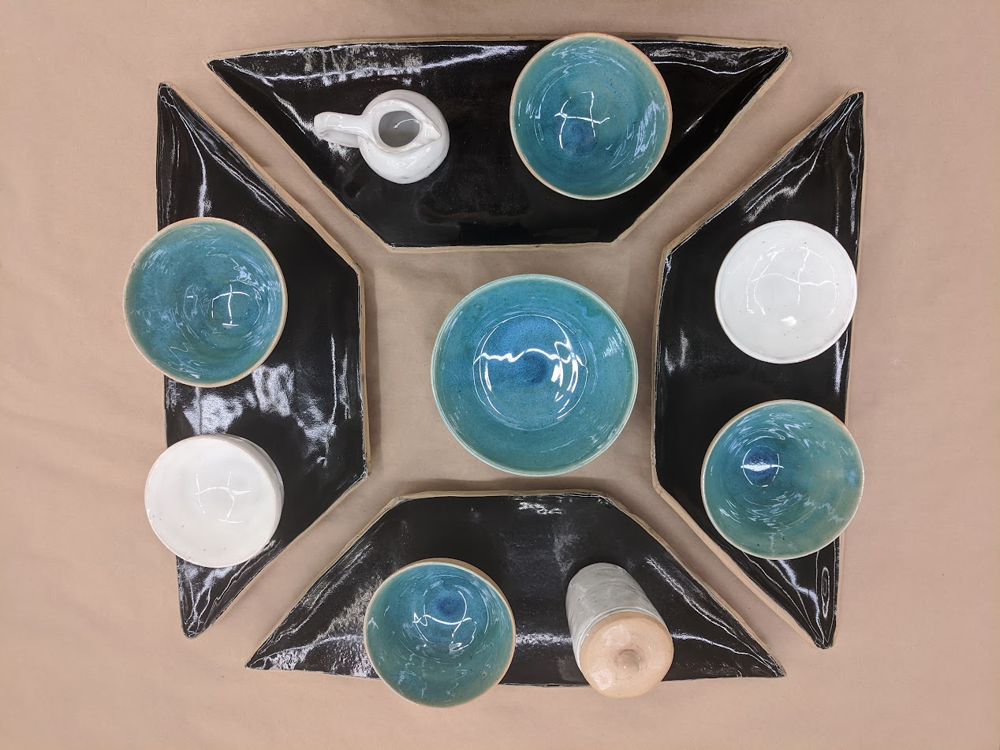

Iris X Zhou
I took a ceramics class for the first time in 2017, and it undoubtedly changed my life.
It also changed my sleep schedule (I spent a lot of late nights in the ceramics studio, trying to get assignments done). I took two more ceramics classes and did some extra work-exchange semesters for no credit, chasing the feeling of creating something from, essentially, dirt, and making it into something beautiful and meaningful.
This page is very much a work in progress, as I haven't had as much time for personal projects and updating this website as I'd like. Regardless, I mostly want a place to brag about the creative work I've done, so here are some of the things I've made over the past few years:

Intimacy (2017)
A personal piece describing a friendship that burned so bright that it burned itself out within a few months.
This piece was displayed in Sprague Gallery's "Ways to Know" exhibit, in spring 2018.
A closer look at the cups in the background of Intimacy. The handles are shaped after Möbius strips, with the half-twist in separate directions.
A reduction-fired bowl with a copper glaze. Normally, this glaze turns out red in an oxygen-poor environment, but an oxygen flare in the kiln caused part of it to turn blue. I especially like the blurred effect where the red and blue meet.
This pair of cups was made for an assignment, where we were to make cups emulating an art movement. My assigned movement was Suprematism, which is based on a limited set of geometric shapes and colors. The cups are not very useful (they are difficult to hold and drink from, and only hold a small amount of liquid), but I like how they turned out.
My maker's mark. This swallow was stamped on the bottom of most of my work.
A work in progress shot from a class I took about sculpting the human form. This was a human heart, but with the characteristic "twist" of a Klein bottle.
A set I created to go along with a menu I also designed and cooked for the class. This set was one of the last things I made at school, and I served food to my classmates from it a day before we were told to leave campus because of COVID-19.